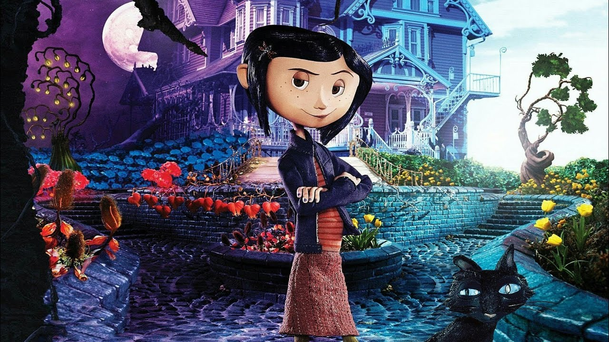

Oi! meu nome é Luiza, tenho 15 anos e meu aniversário é dia 19/11.
Estou no primeiro ano do ensino médio e estudo no mesmo colégio desde o 2º ano do fundamental.
Eu gosto de muitos filmes, e ás vezes enjoo facilmente deles também. O meu filme favorito com certeza é Coraline e o mundo secreto, já que eu assisto desde que tinha 5 anos. Hoje em dia eu gosto de assistir fimes do Estúdio Ghibli, alguns recomendados e recentemente comecei minha maratona dos filmes da Marvel em ordem cronológica.
Eu gosto de documentários sobre casos criminais também (normalmente assisto vídeos sobre esse assunto no YouTube).

Eu comecei o hábito de ler recentemente, e ainda estou me acostumando. As ressacas literárias me ferram nese sentido, mas minhas leituras favoritas até o momento são "O príncipe cruel" e "Um caminho para a liberdade".
☆Eu gosto muito de ir a cafeterias ou shoppings, principalmente depois da escola porque me traz uma sensação boa.
☆Sempre gostei de dançar, mas nunca investi nisso de fato. Hoje em dia eu faço aulas de Jazz para me divertir.
☆Assistir Formula 1 com meu pai aos domingos.
Realmente ainda não tenho certeza do que irei fazer no futuro, como a maioria das pessoas. Além da dança eu sou boa em desenhar, mas com o tempo isso deixou de ser uma opção profissional pra mim.
Nas minhas possibilidades atuais, considero Psicologia a mais forte.
Um dos meus sonhos é visitar a Itália ou França, por isso aprender italiano está em meus planos.